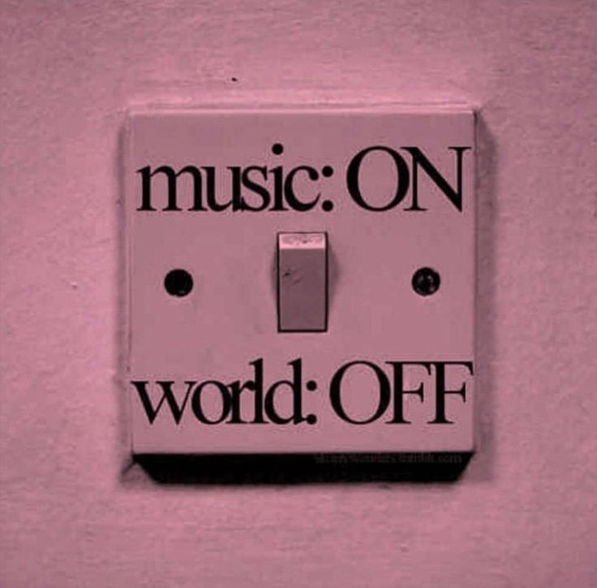
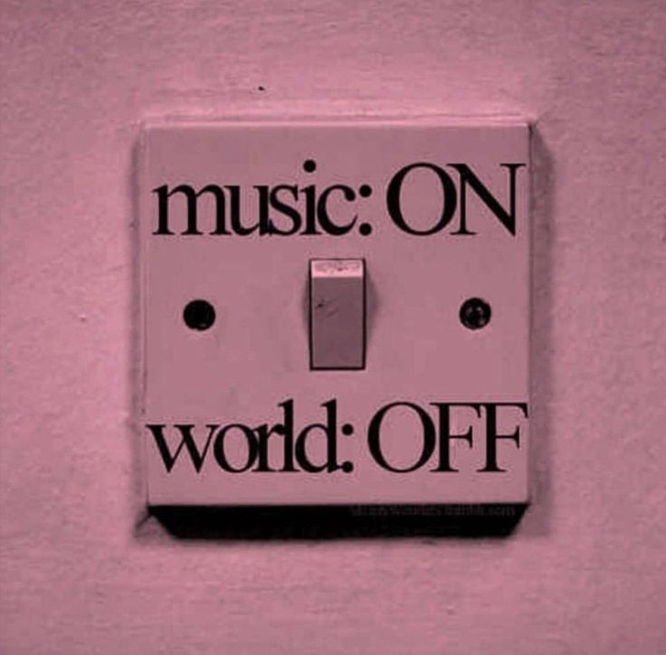

NEWS
ABOUT
BEST OF 2024
pitchfork
The most trusted voice in music
Willemoesgade 17,
2100 Copenhagen, Denmark
E: juh@curbcph.tv
P: (+45) 27 85 10 89
Pitchfork

 

Who We Are
Pitchfork is a leading independent music media platform that has been dedicated to providing music lovers with the latest music news, in-depth reviews, and unique artist interviews since its founding in 1995. We believe that music is one of the most important forms of culture, so we strive to provide honest reviews and in-depth music analysis to audiences around the world.
Pitchfork is a leading independent music media platform that has been dedicated to providing music lovers with the latest music news, in-depth reviews, and unique artist interviews since its founding in 1995. We believe that music is one of the most important forms of culture, so we strive to provide honest reviews and in-depth music analysis to audiences around the world.
Our Mission
Pitchfork's mission is to provide a platform for the celebration and discovery of various music genres. We aim to help our readers open their ears to emerging artists, classic works, and underrated music, discovering the masterpieces they might have missed
Pitchfork's mission is to provide a platform for the celebration and discovery of various music genres. We aim to help our readers open their ears to emerging artists, classic works, and underrated music, discovering the masterpieces they might have missed
Our Impact
Pitchfork has become an indispensable part of the music community, influencing listeners' music choices and artists' exposure. Our reviews are often seen as an important benchmark for assessing an album's success.
Pitchfork has become an indispensable part of the music community, influencing listeners' music choices and artists' exposure. Our reviews are often seen as an important benchmark for assessing an album's success.